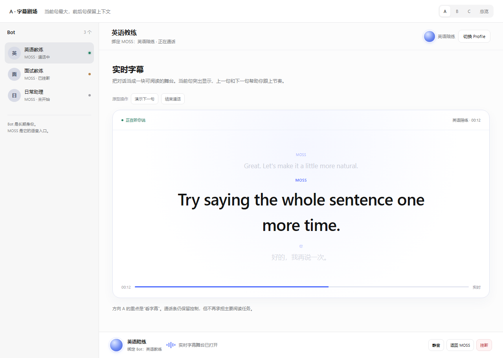
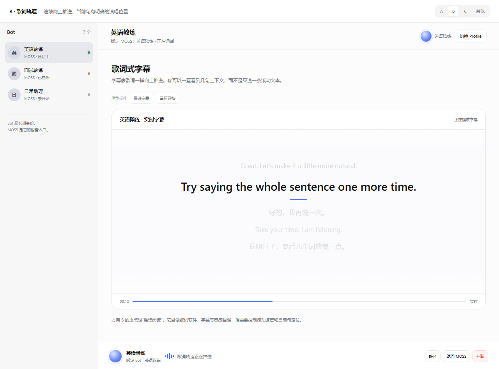
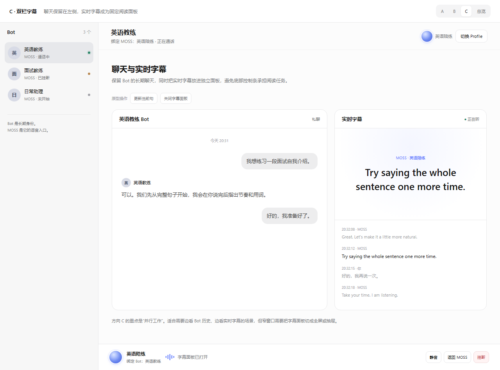

三种“歌词式字幕”方向
现有底部通话条只能看到一条滚动字幕。这组三版把实时字幕提升为可持续阅读的界面，并同时保留 Bot 与 MOSS 的配对身份。点击进入方向查看可操作示例。


评审重点：先看你更喜欢哪种“阅读字幕”的结构。当前只确认布局、层级和切换行为，不确认具体颜色、字号和正式组件。
低保真原型 · 先选阅读结构，再细化视觉
现有底部通话条只能看到一条滚动字幕。这组三版把实时字幕提升为可持续阅读的界面，并同时保留 Bot 与 MOSS 的配对身份。点击进入方向查看可操作示例。


